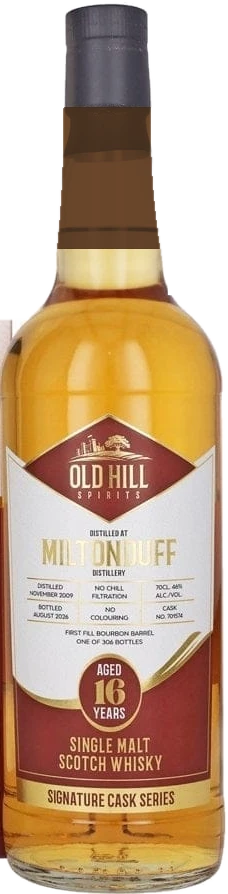

MiltonduffDistilled 2009
16 YearsSingle cask · 46%
Signature Cask Series · One of 306 bottles
Aged. Rare. Kosher.
Our story
Patience is the recipe.
It rests in oak until it is ready.
Distilled at Miltonduff, Speyside. November 2009.
Sixteen years in one first fill bourbon barrel.
No chill filtration. No colouring.
One cask. 306 bottles.
A first for kosher whisky
Exceptional whisky. Exceptional standards.
A rare 16 year old Miltonduff single malt, drawn from a single cask and produced under stringent CRC kosher supervision.
- Bottles
- 306
- Aged
- 16 years
- Strength
- 46% vol
- Bottle
- 70cl
The pour
Into the glass.
A colour of old gold.
Sixteen years of oak, and not a drop of caramel.
Natural colour. Nothing added.
Exactly as the cask gave it.
Hold it to the light. Then make it yours.
£79.99£89.99
Buy the bottle